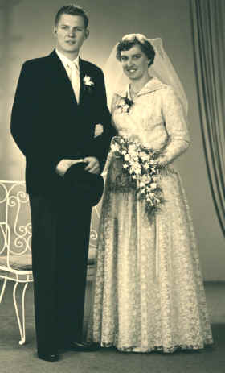

|
Bastiaan (Bas) Vermeij |
 |
|
| Kind van: | Anthonie
Vermeij en Elisabeth de Pee |
|
| Geboren op: | 15-04-1935 | |
| te: | Dubbeldam | |
| Getrouwd met: | Teuna Kooiman (28-02-1938) | |
| op: | 08/06/1960 | |
| te: | Barendrecht | |
| Kinderen | ||
| Naam: | Geboortedatum, -plaats: | |
| Anthonie | 18-12-1960, Dubbeldam | |
| Adrianus (Ad) | 09-12-1962, Dubbeldam | |
| Adriaantje Elisabeth (Annelies) | 25-06-1970, Dordrecht | |
|
Foto's |
||